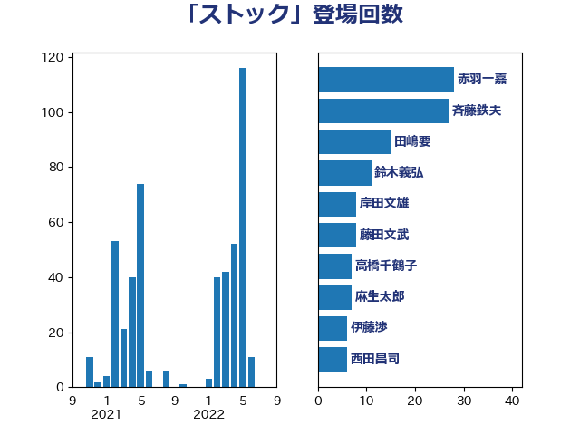

単語「ストック」

| 赤羽一嘉 | 公明党 | 28 回 |
| 斉藤鉄夫 | 公明党 | 27 回 |
| 田嶋要 | 立憲民主党 | 15 回 |
| 鈴木義弘 | 国民民主党 | 11 回 |
| 岸田文雄 | 自由民主党 | 8 回 |
| 藤田文武 | 日本維新の会 | 8 回 |
| 高橋千鶴子 | 日本共産党 | 7 回 |
| 麻生太郎 | 自由民主党 | 7 回 |
| 伊藤渉 | 公明党 | 6 回 |
| 西田昌司 | 自由民主党 | 6 回 |
| 鈴木俊一 | 自由民主党 | 6 回 |
| 室井邦彦 | 日本維新の会 | 5 回 |
| 杉久武 | 公明党 | 5 回 |
| 熊谷裕人 | 立憲民主党 | 5 回 |
| 石原宏高 | 自由民主党 | 5 回 |
| 枝野幸男 | 立憲民主党 | 4 回 |
| 沢田良 | 日本維新の会 | 4 回 |
| 清水真人 | 自由民主党 | 4 回 |
| 小森卓郎 | 自由民主党 | 3 回 |
| 小沼巧 | 立憲民主党 | 3 回 |
| 山際大志郎 | 自由民主党 | 3 回 |
| 柿沢未途 | 無所属 | 3 回 |
| 梅村みずほ | 日本維新の会 | 3 回 |
| 浅野哲 | 国民民主党 | 3 回 |
| 浦野靖人 | 日本維新の会 | 3 回 |
| 足立敏之 | 自由民主党 | 3 回 |
| 金子俊平 | 自由民主党 | 3 回 |
| 長峯誠 | 自由民主党 | 3 回 |
| 中西健治 | 自由民主党 | 2 回 |
| 井上英孝 | 日本維新の会 | 2 回 |
| 城井崇 | 立憲民主党 | 2 回 |
| 大口善徳 | 公明党 | 2 回 |
| 大塚耕平 | 国民民主党 | 2 回 |
| 守島正 | 日本維新の会 | 2 回 |
| 寺田学 | 立憲民主党 | 2 回 |
| 小宮山泰子 | 立憲民主党 | 2 回 |
| 小沢雅仁 | 立憲民主党 | 2 回 |
| 山崎誠 | 立憲民主党 | 2 回 |
| 市村浩一郎 | 日本維新の会 | 2 回 |
| 櫛渕万里 | れいわ新選組 | 2 回 |
| 西村康稔 | 自由民主党 | 2 回 |
| 谷田川元 | 立憲民主党 | 2 回 |
| 豊田俊郎 | 自由民主党 | 2 回 |
| 赤木正幸 | 日本維新の会 | 2 回 |
| おおつき紅葉 | 立憲民主党 | 1 回 |
| 上野通子 | 自由民主党 | 1 回 |
| 中野洋昌 | 公明党 | 1 回 |
| 前原誠司 | 国民民主党 | 1 回 |
| 加藤鮎子 | 自由民主党 | 1 回 |
| 古賀之士 | 立憲民主党 | 1 回 |
| 大家敏志 | 自由民主党 | 1 回 |
| 大西英男 | 自由民主党 | 1 回 |
| 小泉進次郎 | 自由民主党 | 1 回 |
| 山添拓 | 日本共産党 | 1 回 |
| 岡本三成 | 公明党 | 1 回 |
| 岩渕友 | 日本共産党 | 1 回 |
| 川田龍平 | 立憲民主党 | 1 回 |
| 庄子賢一 | 公明党 | 1 回 |
| 朝日健太郎 | 自由民主党 | 1 回 |
| 木村次郎 | 自由民主党 | 1 回 |
| 木村英子 | れいわ新選組 | 1 回 |
| 柳ヶ瀬裕文 | 日本維新の会 | 1 回 |
| 柴田巧 | 日本維新の会 | 1 回 |
| 梅村聡 | 日本維新の会 | 1 回 |
| 武田良太 | 自由民主党 | 1 回 |
| 田村憲久 | 自由民主党 | 1 回 |
| 福岡資麿 | 自由民主党 | 1 回 |
| 福島伸享 | 無所属 | 1 回 |
| 福田昭夫 | 立憲民主党 | 1 回 |
| 稲富修二 | 立憲民主党 | 1 回 |
| 穀田恵二 | 日本共産党 | 1 回 |
| 穂坂泰 | 自由民主党 | 1 回 |
| 竹内真二 | 公明党 | 1 回 |
| 美延映夫 | 日本維新の会 | 1 回 |
| 萩生田光一 | 自由民主党 | 1 回 |
| 藤岡隆雄 | 立憲民主党 | 1 回 |
| 西岡秀子 | 国民民主党 | 1 回 |
| 赤澤亮正 | 自由民主党 | 1 回 |
| 足立康史 | 日本維新の会 | 1 回 |
| 音喜多駿 | 日本維新の会 | 1 回 |
| 高橋光男 | 公明党 | 1 回 |
| 高橋英明 | 日本維新の会 | 1 回 |